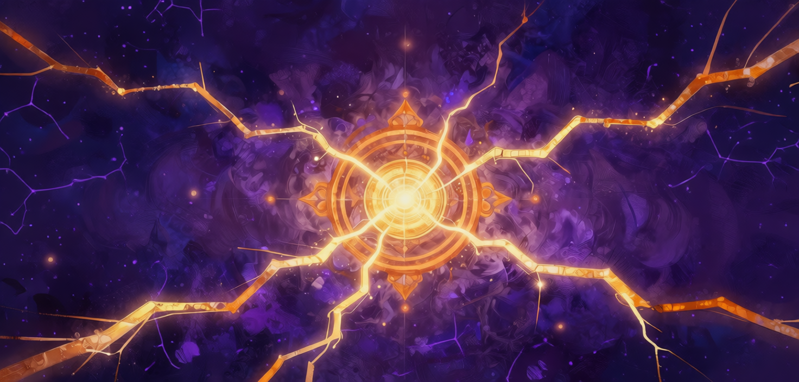

Atmospheric stacking · iOS
Bind the slabs.
Climb the cycle.
One tap. One more slab. Build your tower through eight atmospheric strata, where every misalignment stays with you.

One focused mechanic
Tap to bind a moving slab. Perfect alignment is the only act of grace.
Eight atmospheric strata
Climb into shifting skies, ambient drones and the whispers of past cycles.
Every miss is forever
Misaligned slabs lean and the tower wobbles. Find balance while you can.
Your own rhythm
One-tap controls, audio and haptics toggles, and a closest-approach record.
Strata of the Upper Dark
A meditative tower-stacking game for iOS.
You wake on the Plinth without memory, given one knowledge: how to bind slabs. Tap to place each falling slab on the tower. Perfect alignment is the only act of grace — every misalignment is forever. Climb through eight atmospheric strata of the Upper Dark, each shifting the air around you. The tower will fall. The cycle continues.
Strata of the Upper Dark
Eight biomes, each with hand-painted backdrops, ambient drones, and whispered voices of past Anchorites. As you climb, the air thins, the lighting shifts, and the cosmos around you starts to fail.
What's inside
One mechanic
Tap to bind. That's it. Slabs slide; you place them; the tower rises until it falls.
Eight strata
From The Settling to The Vault's Shadow — each shifts the atmosphere, lighting, ambient sound, and the whispers of past cycles.
Voices in the rubble
Misaligned binds scatter fragments that whisper in the voices of past Anchorites. Different situations summon different fragments.
Ship-shape
One-tap controls. Audio & haptics toggles. Closest-approach record across cycles. Designed for the silent commute.
Need help?
Email pondd.me@gmail.com or visit the support page.
Begin another cycle.
Explore StackCycle on the App Store.